Ольхон
- 21-24 августа 2008 -
[ 1 ] - [ 2 ] - [ 3 ]
Часть 2. Поездка в Хужир, мыс Бурхан, Песчанная, Сарайский
залив.
. 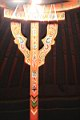
. 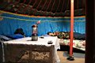
Утро в бурятской юрте
22 августа. Сегодня на 7 утра ожидали присториться к автобусу,
который повезет туристов в экскурсию по Ольхону, но это дело отменилось.
Так что устроили экскурсию сами. Света за рулем своего Runx`a, я, Марина,
велосипед в багажнике. Очень хорошо вписались в нашу компанию Света
Эсбеетка и ее мама. Эсбеетка - это по-бурятски имя Света, она работает
на базе экскурсоводом по Ольхону. И хотя сегодня у нее выходной, но
кое-что она нам рассказала :)
Доехали до Хужира с остановками посмотреть на всякие заливы,
мысы, озера. Потом на мыс Бурхан, тут все туристы просто обязаны побывать
и унести с собой часть энергии (позитивной или наоборот - это кому как).
В Хужире стоит походить по сувенирным магазинчикам, их тут много, очень
интересно. В музей не попали, был закрыт. Хорошо пообедали позами в
юрте (возле магазина "Хороший"), в юрте низкие столы и лавочки.
Потом ходили искать рыбу, чтобы пожарить ее на рожне на берегу. Искали
рыбу - встретили Женю. Это знакомый Марины, он тут туристов водил-возил
и сейчас думает, куда бы ему прокатиться на микроавтобусе. Ну мы и подсказали
куда :) Оставили машину Светы возле юрты и всей компанией покатили в
Песчанную на микрике. Да, я от Хужира хотел на велосипеде доехать, но
они меня перед поселком Харанцы догнали и пригласили в микрик :)
Маринка летает :)
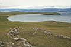
Залив Тогай и озеро Ханхой
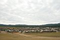
Поселок Хужир - столица Ольхона
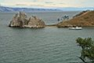
. 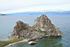
. 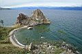
Мыс Бурхан (Скала Шаманка) - визитная фотокарточка Ольхона
. 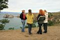
. 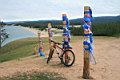
. 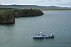
Говорят, что женщинам на мыс Бурхан заходить нельзя
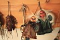
. 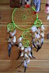
. 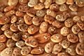
. 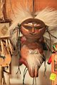
. 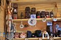
Сувенирнов всяких разных очень много, и не только Ольхонские и бурятские
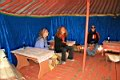
Сидим в юрте, ждем позы
. 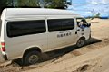
. 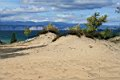
. 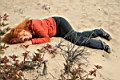
.
Песчанная -это так или местность называется, или поселок,
не знаю точно, но песка там реально много и он везде. Даже барханы есть.
Мы где-то на берегу расположились. Я и Женя искупались. Вода холодная,
ветер дует, волны гонит. Но песок теплый, костер жаркий, чай с чабрецом
вкусный, омуль вяленый и соленый, все девченки симпатичные и веселые
:)
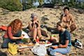
. 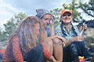
.
. 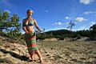
. 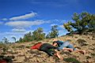
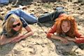
.
.
Солнце все ниже, Женя заторопился к своим туристам
и мы поехали обратно. На дороге нам помахали поляки, "Аааа! нас
застопили!!!" - кричали автостопщицы в микрике :) В Хужире распрощались
с Женей, созвонились с Лёхой, они (Лёха, Соня, Толян, Олег и Олег Олегович)
были где-то рядом, решили собраться на Сарайском пляже. Собрались и
поели дынью. Кстати, Светка Эсбеетка зовет Лёху тоже по-бурятски - Ариэпа
:)
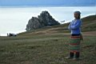
. 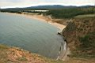
. 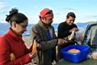
. 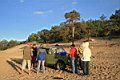
. 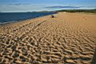
На Сарайском пляже тоже песка много...
Я решил, что хватит уже велосипед в багажнике возить. Это уже батонством
попахивает :) От Хужира до базы ехал почти 3 часа. Приехал часов в 12.
Маринка, добрая душа, оставила для меня волшебных лепешек, дала почитать
"Нижнюю Тундру" Пелевина . . .
И я завис на пол-ночи :) :) :) :) :) :)
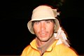
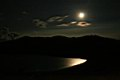
Окончание читайте здесь . . .
Лёха Слюдянский.
Фото: Август 2008.
Текст: Сентябрь 2008.